Photo Studio
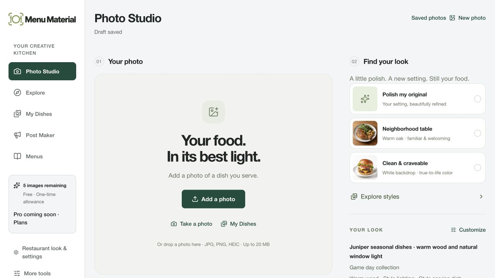
Matched earlier header
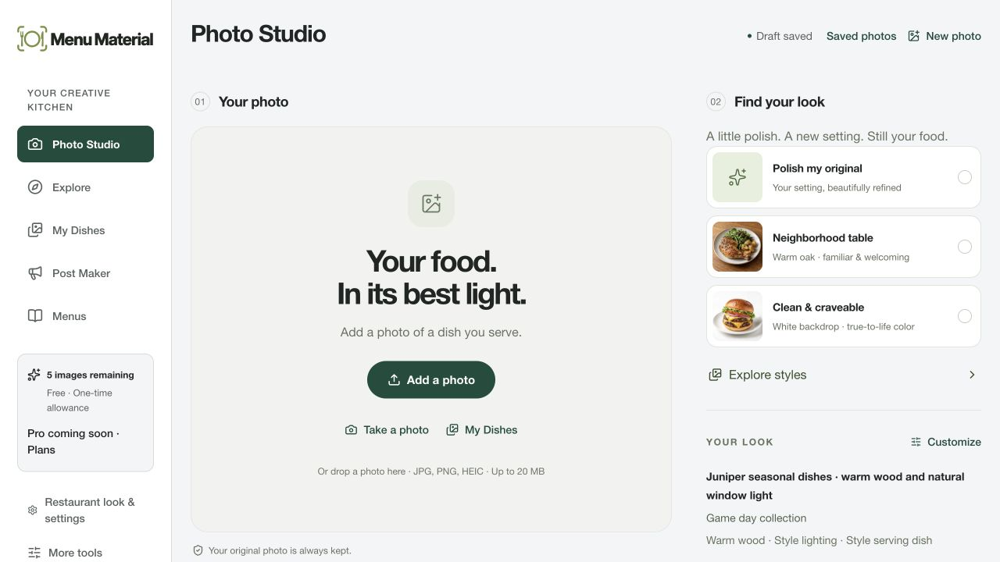
Actual local browser captures. 1280 × 720 at default text size. Header-only crops preserve the capture scale. Explore retains its documented editorial serif.


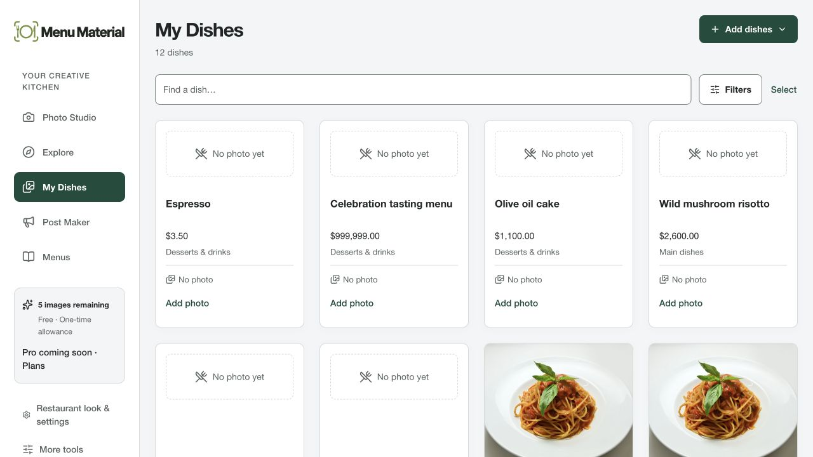
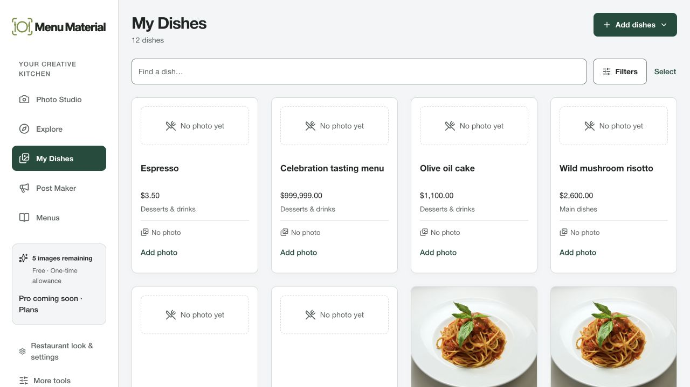
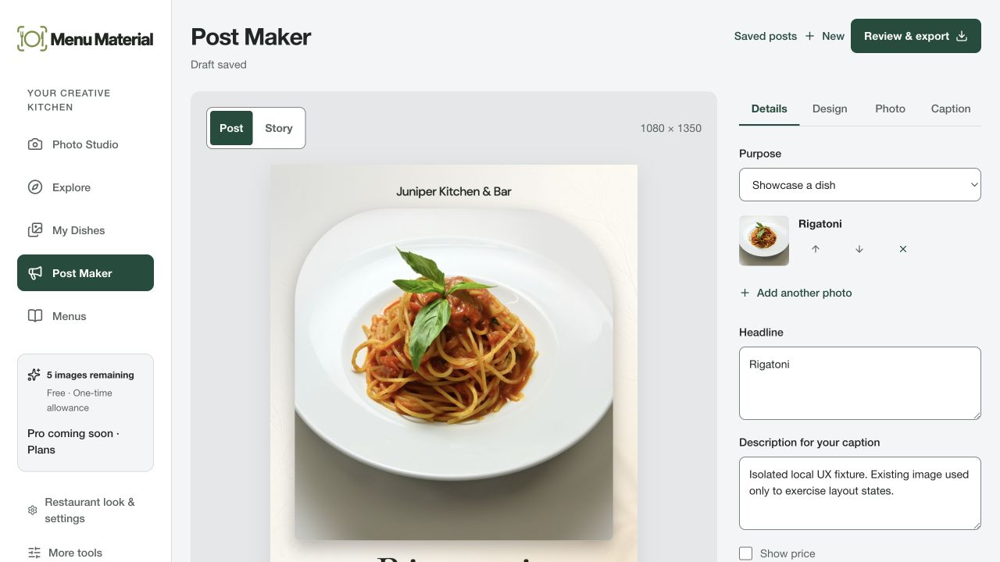
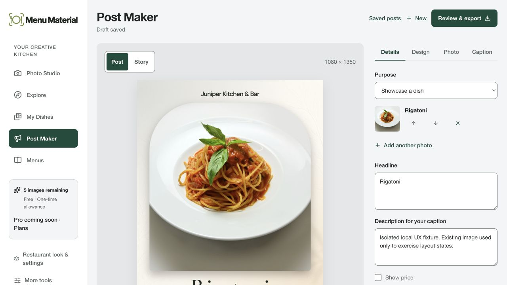
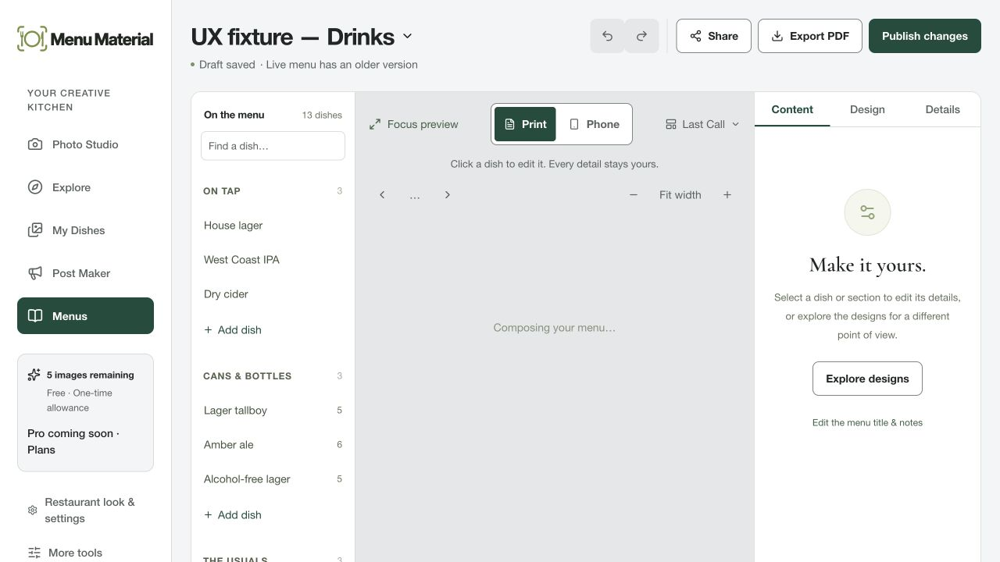
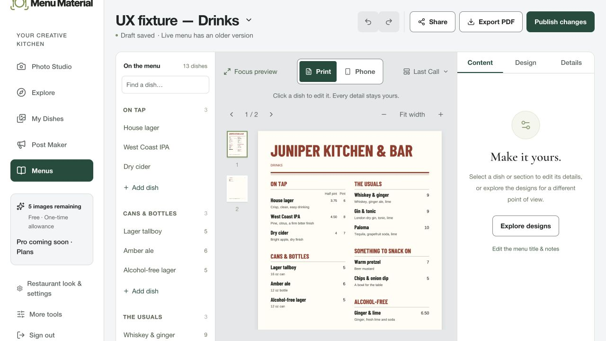
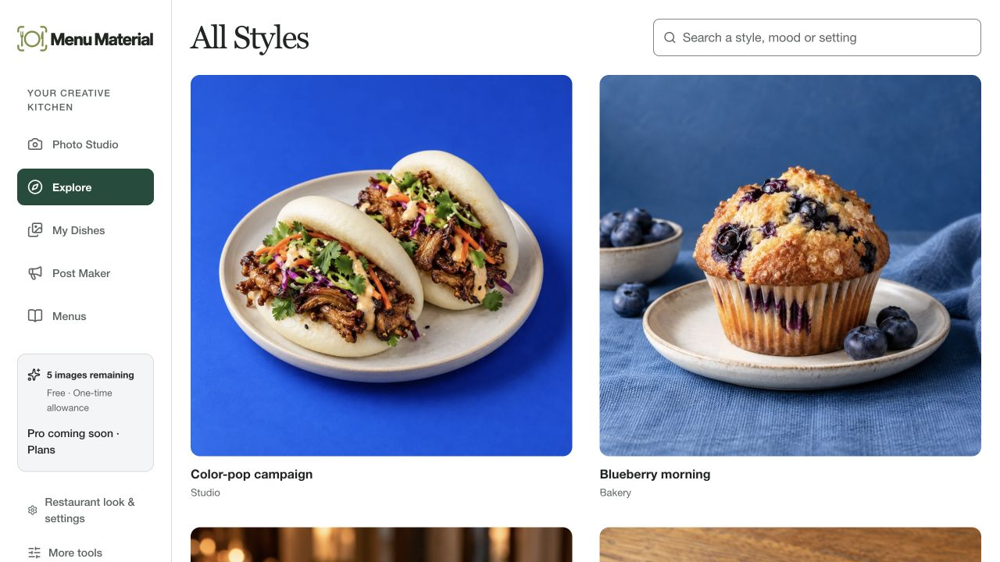

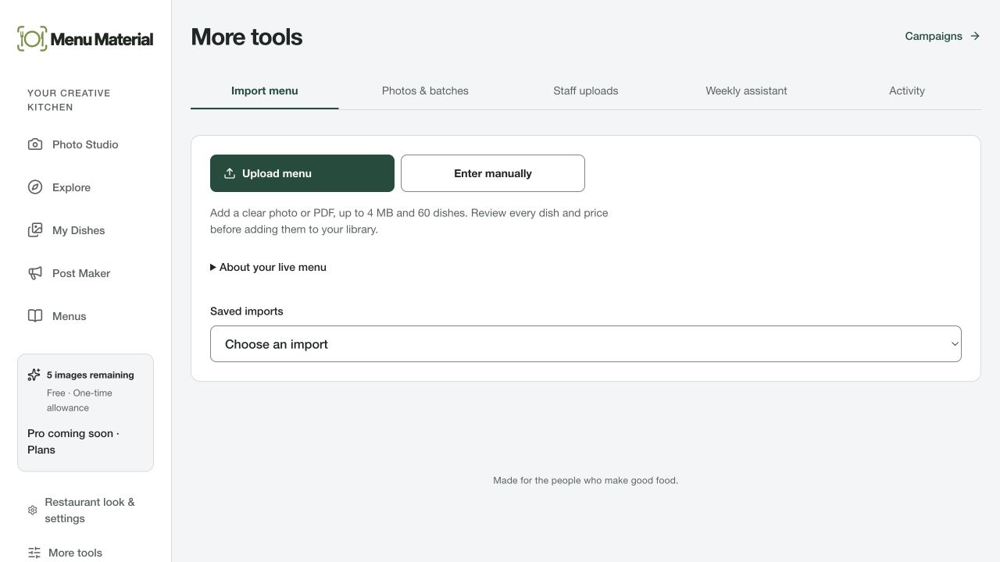
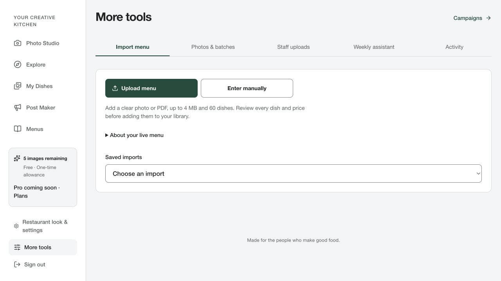